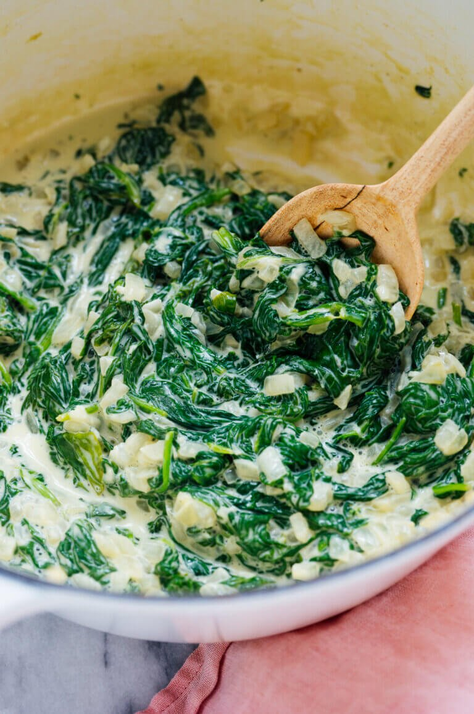
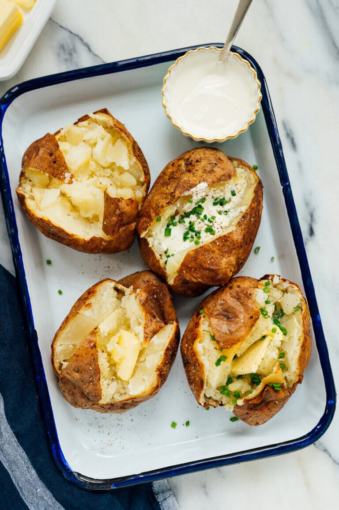
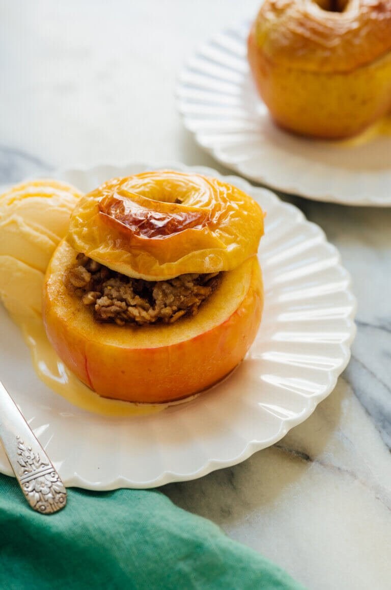

Fresh Creamed Spinach
Creamed spinach can go right or wrong, and this creamed spinach recipe is just right. The creaminess comes from cream cheese rather than heavy cream, which offers some delectable tanginess. Fresh baby spinach cooks down in mere minutes, no chopping required, so this recipe is ready in roughly twenty minutes.
Creamed spinach will never be the prettiest menu item on your Thanksgiving table, but the verdant color of freshly cooked spinach will liven up otherwise beige plates. The more greens the better, I say.
I didn’t grow up with creamed spinach at our Thanksgiving suppers. I’ve found it on steakhouse menus while searching for vegetarian options. The name “creamed spinach” doesn’t sound terribly enticing, does it?
I wasn’t sold on the general concept until I realized that it’s almost like spinach dip in side dish form. Creamed spinach earned my full attention in that moment. After some trial and error, I’m sharing this recipe because I think it’s worthy of your attention, too. It’s delicious, creamy, comforting and just so nice!
Best Baked Potato
Meet the baked potato of my dreams! These baked potatoes are fluffy on the inside and crisp on the outside. They’re exactly the kind of baked potato I’ve been craving. If you share my definition of what a baked potato should be, you could call these potatoes perfect.
I baked potatoes every which way to arrive at this recipe. I tried various baking temperatures, different crisping methods, and even analyzed how and when to slice open those beautiful baked spuds.
Perfect Baked Apples
Craving something sweet? These baked apples are a delightful dessert featuring seasonal fruit. They taste like an apple crisp but look much cuter.
This baked apple recipe is all in the technique, but it’s not complicated. I’ll walk you through it below.
You’ll need a short list of ingredients to make this recipe—apples, oats, coconut or brown sugar, optional pecans or walnuts, and butter. We’ll add a little bit of cinnamon and salt to take the flavor over the top.
Serve these wholesome baked apples with a scoop of vanilla ice cream or creamy yogurt. They’re sweet enough to taste like a treat, but wholesome at the same time. Serve your baked apples as a special dessert, or make them as a fun weekend project!